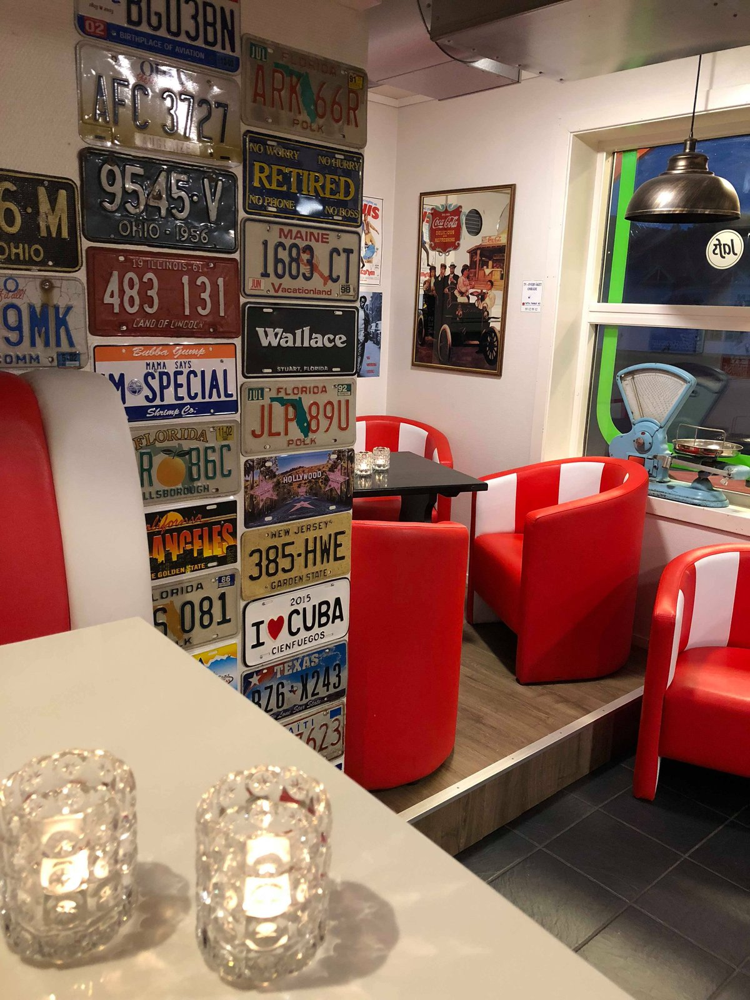

Osterøykroa i Lonevåg – hjartet av Osterøy sidan 1997. Kjøkken- og grillmat, og kanskje Vestlandets beste burger.
Se meny
Stikk innom for burger, pizza eller ei snadder-tallerken – vi held ope heile veka.
Man–Tor: 11–21
Fre: 11–22
Lør: 13–22
Søn: 13–21
Lonevågen 2
5282 Lonevåg
❤️ Osterøy ❤️
Tlf: 56 19 34 34
E-post: roydy@icloud.com
Vi er mest kjend for burgerane våre, men serverer også pizza, snadder-tallerkenar og fish & chips. Torsdagar serverer vi raspetallerken.
 Hamburgermeny
Hamburgermeny
Burgermenyane våre kjem i fleire storleikar, frå 100 g til den solide 500 g-utgåva – med drikke og pommes frites.
 Nystekt pizza
Nystekt pizza
15 ulike pizzaer, eller sett saman din eigen. Også glutenfrie alternativ!
 Raspetallerken
Raspetallerken
Biffsnadder, kyllingsnadder, løvstek, kebabtallerken, snitzel eller fish & chips – servert med frisk salat.

Osterøykroa ligg i hjartet av Osterøy og har vore ein lokal møteplass sidan 1997. Me serverer kjøkken- og grillmat, tilbyr catering og inviterer til trivelege kveldar med livemusikk – og kanskje Vestlandets beste burger.
Les mer om oss